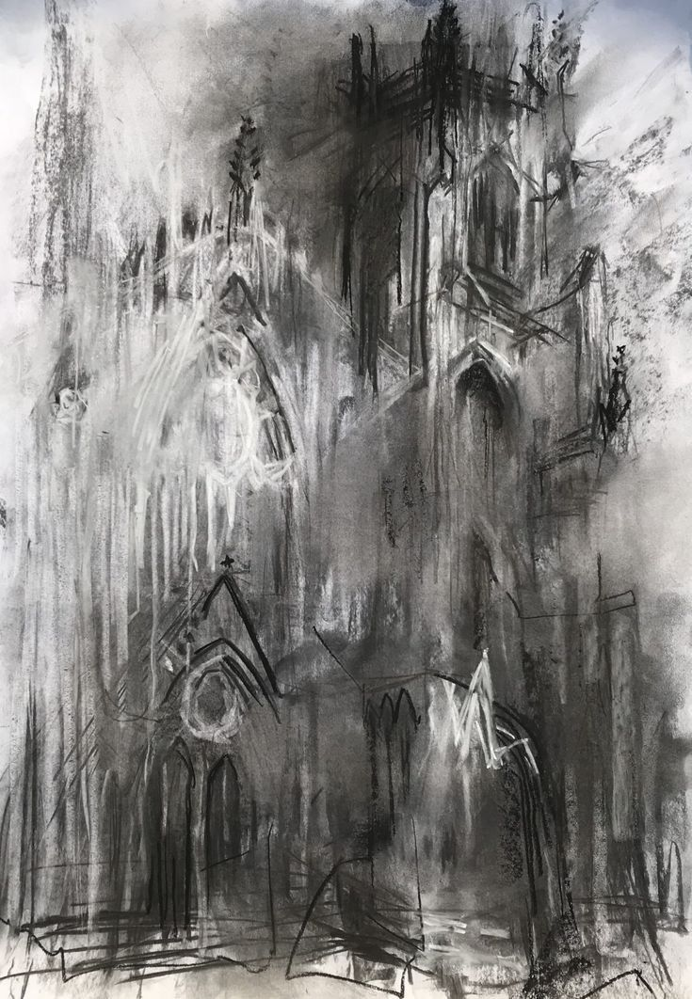

O dimineață sumbră... aspră
Plină de nori și de ceață
Afară-i un ger puternic, o ploaie înghețată
Cu stropi nemernici
Și stau eu în camera mea... privind pe geam, dar și în cameră...
Tabloul alb și negru ce se desfășoară-n fața mea
A mea ureche ce aude, o piesă minunată ce surâde, puțin cinic dacă vrești
Aud ploaia de afară: un sunet crunt, cumplit.
Dar oarecum liniștitor...
Îmi găsesc calmul în sufletul meu cu-n sunet ocrotitor
În această dimineață... când simt că sunt doar eu și cu mine
Sufletul meu se odihnește: Odihnească-se-n pace
Că aici e cald și bine... a mea inimă bate cu veselie..
Dar și ce veselie
Atunci când sunt doar eu și cu mine
Privesc pe sumbrul nostru geam
Crăpături in colțuri le vedeam
Cu-n neam ce ține locul
A nu știu câte focuri
Stinse și mai toate
De o ploaie cu de toate.
Tunet fulgere fugind
La mine-n suflet să le prind
Să îmi dea a mea putere
Să nu-mi iau la revedere
De la acest sumbru peisaj
Care-mi pune-n buze
Un vuiet dulce, un pasaj
Către tabloul ce citează multe
El citează... chiar dictează
O ramură a începutului
Dar ea se rupe. Apoi pică
A dispărut și ea pe-afară
El citează... Ce citează...?
Citează cum sunt eu
A mea întreagă existență
A ei splendoare. A ei sluțenie
A ei groaznică odoare
Eu cu mine singur-n casă
Cu-n fior rece ce mă străbate
Mă ling ușor pe buze
Și simt altceva
Un peisaj schimbat, un peisaj crud
Un peisaj nemaivăzut
Unul dulce.. și plăcut..
Dar fioros și mai includ
O sărată dulce rană.
Linsă și aprinsă,
Cu o flacăra ne mai stinsă
Cum luminează calea mea; a lor; a altora
Cu dorința chiar aprinsă
Ca pe tortul de festivă
Chiar aici, în fața mea
Cum se-nchide rana mea...
Și să simt pe pielea mea, în rana mea
Să-i simt gustul și odoarea;
Când rămân singur, chiar aici
O oglindă spartă-n cinci
Și cu-n râu roșu peste ea
Cu valurile curgând pe fața mea
Se transformă-n stropi roșii,
Stropii plini de agonie, ură
Cum se rupe fina țesătură
Dintre vis și realitate
Cum ramura ruptă apare
Simțind că-mi dau ultima suflare
Ultima mea chemare dispare
Și se continuă lanțul rupt
Pe care se afla gravura:
"Aici acum... nu poat'să moară"
A lui crudă rugăciune și un negru rugământ
O flacără neagră se aprinde, dându-i foc la al lui pământ
Lăsând în urma vidului distrugerii sale o cale pavată cu dureri și regrete.
Din sânge mari strămoși s-adună
Împletind unul într-altul o conexiune poate Sfântă
Măsluită cu-n odor, cu-n fior, cu-n ochi de sânge și-un topor
În care se găsește a lui ce mai Poveste
Din neamurile lui străvechi
Cu flăcările sale stinse
Tabloul roșu se aprinde
Dându-i foc la ai lui pereți
Tot ce mai rămâne-i ploaia
C-o stârvină a ei de mânuit
S-a rupt lanțul, și al lui ochi nu și l-a mai găsit.
Și-ntr-un iaz mai plin de ură
Se găsește și-acum acea gravură
Pictată cu-ale lui lacrimi;
Ruptă-n piatră cu ale lui patimi
Și cu oasele deasupra
Iar cu craniul pe de-a ruptea.
Roșu-n sânge și sânge-n ros..
Stă-n ruine putrezind... un cadavru misterios.
